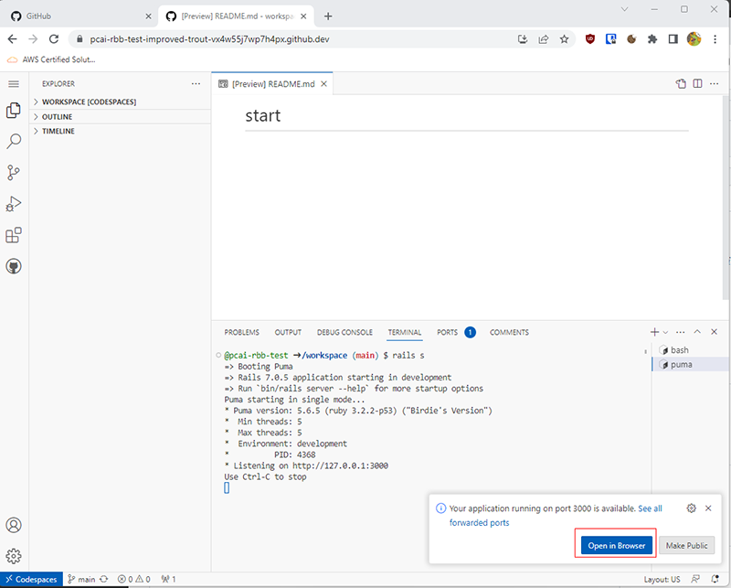

Goals
Steps
Start the server
Terminalrails serverNavigate to your application
You should see a notification appear in the bottom right corner of your editor. If it's hidden, click the "bell" icon to bring it back up.
Click on the Open in Browser button in the notification to navigate to your app.
You should see your web app actually running! It should look like this:

Stop the server
Expected result:^C- Gracefully stopping, waiting for requests to finish === puma shutdown: 2023-06-26 19:13:29 +0000 === - Goodbye! Exiting